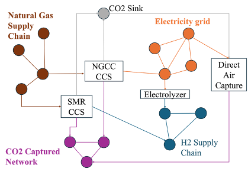
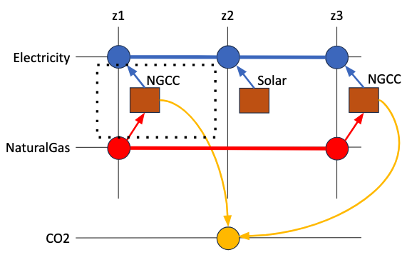

Overview
Multi-commodity flow network
MACRO is designed to represent energy systems in a detailed manner, capturing interactions among various sectors and technologies. The system is structured as a multi-commodity flow network, with each commodity having independent spatial and temporal scale:

As an example, the figure below illustrates a multi-plex network representing an energy system with electricity, natural gas, and CO2 sectors, with two natural gas power plants, and a solar panel. Blue nodes represent the electricity sector, red nodes represent natural gas, and yellow nodes represent CO2. The edges depict commodity flow, and squares represent transformation points. 
As illustrated in the figures above, the core components of the model are:
- Vertices: Represent balance equations and can correspond to transformations (linking two or more commodity networks), storage systems, or demand nodes (outflows):
- Transformations:
- Special vertices that convert one commodity type into another, acting as bridges between sectors.
- They represent conversion processes defined by a set of stoichiometric equations specifying transformation ratios.
- Storage:
- Stores commodities for future use.
- The flow of commodities into and out of storage systems is regulated by Storage balance equations.
- Nodes:
- Represent geographical locations or zones, each associated with a commodity type.
- They can be of two types: demand nodes (outflows) or sources (inflows).
- Demand balance equations are used to balance the flow of commodities into and out of the node.
- They form the network for a specific sector (e.g., electricity network, hydrogen network, etc.).
- Transformations:
- Edges:
- Depict the flow of a commodity into or out of a vertex.
- Capacity sizing decisions, capex/opex, planning and operational constraints are associated with the edges.
- Assets: Defined as a collection of edges and vertices. See MACRO Asset Library for a list of all the assets available in MACRO.
MACRO includes a library of assets (see MACRO Asset Library) and constraints (see MACRO Constraint Library), enabling fast and flexible assembly of new technologies and sectors.
Benders decomposition
MACRO is natively designed to create optimization models ready to be solved using the Benders decomposition framework and high-performance decomposition algorithms. This allows to solve large-scale problems with several sectors interacting together in a reasonable time frame.